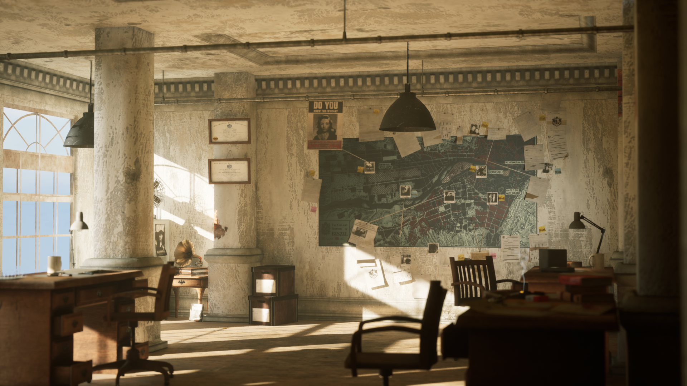

The City & The City
Environment Art

Overview
- Role: Environment Artist
- Focus: Composition, atmosphere, layout
- Engine: Unity
Brief description of the project. Explain intent, mood, and what you were trying to achieve.
Breakdown
Blockout

Environment Assets

Lighting

Reflection
What you learned, what you would improve, technical challenges.